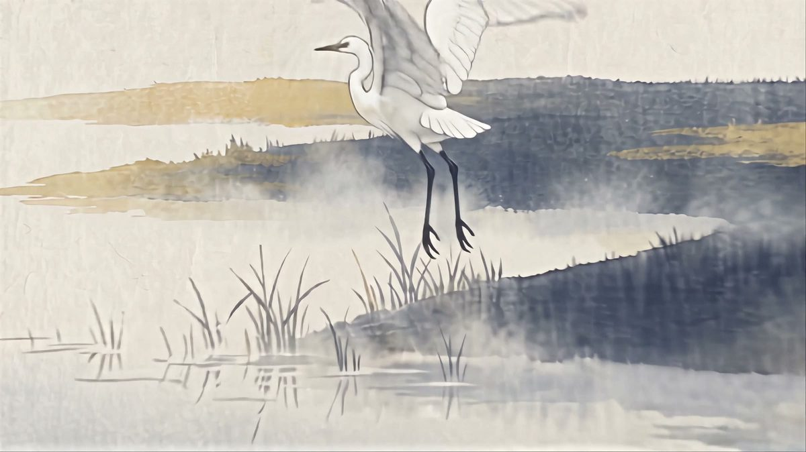
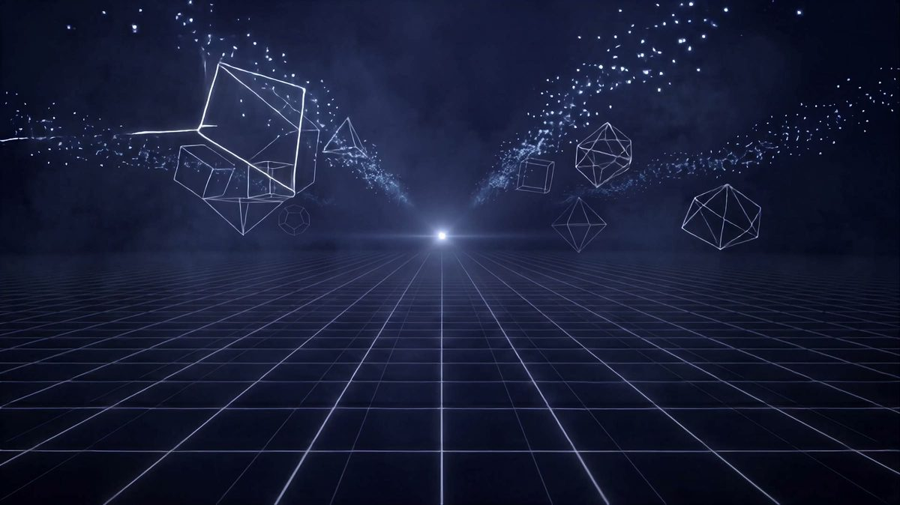
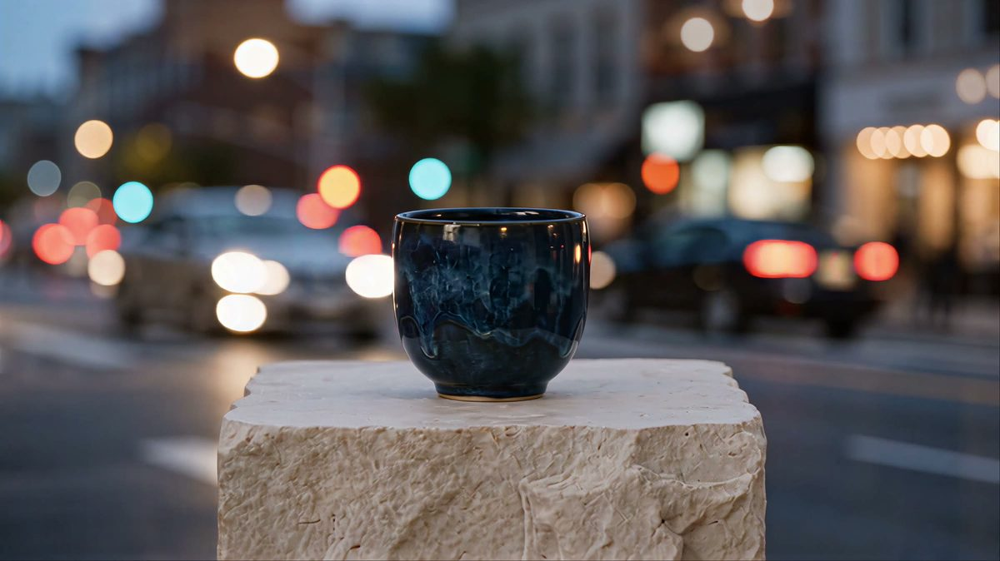

Web
ホームページをつくる
作って終わりではなく、渡して終わり。ドメインもサーバーも、あなたの名義で残します。
鍵ごとお渡しして、当方のアカウントは納品のときに消します。月々の支払いに縛るやり方はしません。
Fukuoka — Web / AI Film / QA / Payment
ホームページとAI動画をつくり、システムが動くかどうかまで確かめます。

作って終わりではなく、渡して終わり。ドメインもサーバーも、あなたの名義で残します。
鍵ごとお渡しして、当方のアカウントは納品のときに消します。月々の支払いに縛るやり方はしません。
絵を動かす。店の仕事を見せる。スマホで見られる縦の動画から、長いものまで。
作品の中をカメラが進む形で、作家さんの絵を映像にしてきました。お店の仕事も撮らずに作れます。

触って、壊れるところを見つけて、直し方まで書きます。
動かない場所、分かりにくい場所、日本語がおかしい場所を見つけて渡します。海外のソフトの日本語を直す仕事もしています。

カードやスマホで払えるようにします。機械選びから導入、そのあとの使い方まで。
Square の申し込み、置いたあとの設定と使い方まで、通しで見ます。入れただけで終わらないように。
写真や絵が一枚あれば、そこから映像にできます。下の四枚にさわってみてください。
四枚とも、AIで作った見本です。実在の作品やお店ではありません。
火加減を読むのも、画面の向こうを読むのも、同じだと思っています。
会議はしません。メールとチャットで進めます。そのぶん、手を動かす時間に回します。遠くの方でも、同じように進みます。
費用は、やることが決まってからお伝えします。先にご相談ください。
墨絵を描く作家さんのサイトをつくり、公開しています。
龍の絵を、絵の中をカメラが進む映像にして納めました。
スマホ修理のアカウントを、自分で動かしています。どんな動画が見られて、どんな動画が見られないかを、実際の反応で確かめながら作っています。
世界中で使われているソフトの日本語を直し、開発チームに修正してもらいました。記録は公開されています。
会社から依頼を受けて、できあがったシステムを使う人の側から確かめています。
ご依頼を受けて動画をつくり、お納めしています。
Square を導入し、お店のお会計をカードやスマホに対応させています。
古い言葉の「あはひ」から取りました。漢字では「間」と書きます。ものとものが接するところ、人と人の間柄、色のつりあい、その場の情勢。昔の人は、この四つをひとつの言葉で指していました。
この仕事も、同じところに立っています。作家と、その作品をまだ知らない人。依頼した人と、受け取る人。人と、AIという道具。
つくるのは、ホームページでも動画でもありません。橋です。橋は、渡る人のためにあります。渡る人が橋を意識しないなら、それは良い橋です。作家のサイトをつくるとき、目立つべきは作品であって、作り手ではありません。
前に出ない。けれど、そこに必ずある。何をどうしたいか、まだ形になっていなくて構いません。
仕事のご相談、見積り、「こんなことできますか」のご質問。どれでも構いません。何をしたいかだけ書いていただければ、こちらで整理します。
2営業日以内にお返事します。電話はしていません。メールとチャットで進めます。